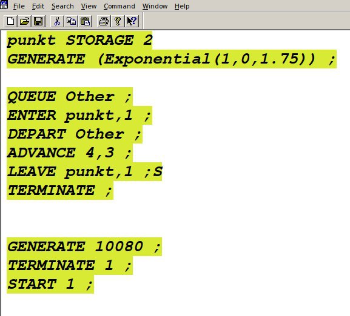

Определить: - характеристики качества обслуживания автомобилей, в
частности, средних длин очередей; среднего времени обслуживания
автомобиля; среднего времени пребывания автомобиля на пункте пропуска; -
наилучшую стратегию обслуживания автомобилей на пункте пограничного
контроля; - оптимальное количество пропускных пунктов.
Задание
Cоставить модель для первой стратегии обслуживания, когда
прибывающие автомобили образуют две очереди и обслуживаются
соответствующими пропускными пунктами, имеем следующую модель
Cоставить модель для второй стратегии обслуживания, когда
прибывающие автомобили образуют одну очередь и обслуживаются
освободившимся пропускным пунктом;
Cвести полученные статистики моделирования в таблицу
По результатам моделирования сделать вывод о наилучшей стратегии
обслуживания автомобилей;
Изменив модели, определить оптимальное число пропускных пунктов (от
1 до 4) для каждой стратегии при условии, что:
коэффициент загрузки пропускных пунктов принадлежит интервалу [0, 5;
0, 95];
среднее число автомобилей, одновременно находящихся на
контрольно-пропускном пункте, не должно превышать 3;
среднее время ожидания обслуживания не должно превышать 4 мин
Теоретическое введение
Для первой стратегии обслуживания, когда прибывающие автомобили
образуют две очереди и обслуживаются соответствующими пропускными
пунктами, имеем следующую модель: ```GENERATE (Exponential(1,0,1.75)) ;
прибытие автомобилей TEST LE Q\(Other1,Q\)Other2,Obsl_2 ; длина оч. 1<=
длине оч. 2 TEST E Q\(Other1,Q\)Other2,Obsl_1 ; длина оч. 1=
длине оч. 2 TRANSFER 0.5,Obsl_1,Obsl_2 ; длины очередей равны, ;
выбираем произв. пункт пропуска ; моделирование работы пункта 1 Obsl_1
QUEUE Other1 ; присоединение к очереди 1 SEIZE punkt1 ; занятие пункта 1
DEPART Other1 ; выход из очереди 1 ADVANCE 4,3 ; обслуживание на пункте
1 RELEASE punkt1 ; освобождение пункта 1 TERMINATE ; автомобиль покидает
систему
; моделирование работы пункта 2 Obsl_2 QUEUE Other2 ; присоединение к
очереди 2 SEIZE punkt2 ; занятие пункта 2 DEPART Other2 ; выход из
очереди 2 ADVANCE 4,3 ; обслуживание на пункте 2 RELEASE punkt2 ;
освобождение пункта 2
TERMINATE ; автомобиль покидает систему ; задание условия остановки
процедуры моделирования
GENERATE 10080 ; генерация фиктивного транзакта, ; указывающего на
окончание рабочей недели ; (7 дней x 24 часа x 60 мин = 10080 мин)
TERMINATE 1 ; остановить моделирование START 1 ; запуск процедуры
моделирования ```
Выполнение лабораторной
работы
Составили модель для первой стратегии обслуживания, когда
прибывающие автомобили образуют две очереди и обслуживаются
соответствующими пропускными пунктами (рис. [-@fig:001]).
Модель для первой стратегии
обслуживания
Результат моделирования для первой стратегии обслуживания
Результат моделирования для первой
стратегии обслуживания
Cоставили модель для второй стратегии обслуживания, когда
прибывающие автомобили образуют одну очередь и обслуживаются
освободившимся пропускным пунктом;(рис. [-@fig:003]).

Модель для второй стратегии
обслуживания
Результат моделирования для второй стратегии обслуживания
Результат моделирования для второй
стратегии обслуживания
Cвели полученные статистики моделирования в таблицу (рис. [-@fig:005]).
Сравнительная таблица
По результатам моделирования сделали вывод, что наилучшей
стратегией обслуживания автомобилей является “стратегия 2”.
Изменив модели, определили оптимальное число пропускных пунктов
(от 1 до 4):
Для первой стратегии - 4 Для второй стратегии - 3 и 4
Составили модель для первой стратегии обслуживания, когда
прибывающие автомобили образуют две очереди и обслуживаются одним
пропускным пунктом
Модель для первой стратегии обслуживания
с одним пропускным пунктом
Результат моделирования для первой стратегии обслуживания с одним
пропускным пунктом
Результат моделирования для первой
стратегии обслуживания с одним пропускным пунктом
Составили модель для первой стратегии обслуживания, когда
прибывающие автомобили образуют две очереди и обслуживаются тремя
пропускными пунктами
Модель для первой стратегии обслуживания
с тремя пропускными пунктами
Результат моделирования для первой стратегии обслуживания с тремя
пропускными пунктами
Результат моделирования для первой
стратегии обслуживания с тремя пропускными пунктами
Составили модель для первой стратегии обслуживания, когда
прибывающие автомобили образуют две очереди и обслуживаются четырьмя
пропускными пунктами
Модель для первой стратегии обслуживания
с четырьмя пропускными пунктами
Результат моделирования для первой стратегии обслуживания с тремя
пропускными пунктами
Результат моделирования для первой
стратегии обслуживания с четырьмя пропускными пунктами
Составили модель для второй стратегии обслуживания, когда
прибывающие автомобили образуют одну очередь и обслуживаются тремя
пропускными пунктами
Модель для второй стратегии обслуживания
с тремя пропускными пунктами
Результат моделирования для первой стратегии обслуживания с тремя
пропускными пунктами
Результат моделирования для второй
стратегии обслуживания с тремя пропускными пунктами
Составили модель для второй стратегии обслуживания, когда
прибывающие автомобили образуют одну очередь и обслуживаются четырьмя
пропускными пунктами
Модель для второй стратегии обслуживания
с четырьмя пропускными пунктами
Результат моделирования для первой стратегии обслуживания с тремя
пропускными пунктами
Результат моделирования для второй
стратегии обслуживания с четырьмя пропускными пунктами
Выводы
Определили: - характеристики качества обслуживания автомобилей, в
частности, средних длин очередей; среднего времени обслуживания
автомобиля; среднего времени пребывания автомобиля на пункте пропуска; -
наилучшую стратегию обслуживания автомобилей на пункте пограничного
контроля; - оптимальное количество пропускных пунктов.
Список литературы
Постановка задачи оптимизации и численные методы ее решения
[Электронный ресурс]. URL:
https://hub.exponenta.ru/post/postanovka-zadachi-optimizatsii-i-chislennye-metody-ee-resheniya356
(дата обращения: 03.01.2023).
Применение многомерной математической модели для решения задачи
оптимизации стратегии технического обслуживания сложных систем
[Электронный ресурс]. URL:
https://infourok.ru/primenenie-mnogomernoy-matematicheskoy-modeli-dlya-resheniya-zadachi-optimizacii-strategii-tehnicheskogo-obsluzhivaniya-slozhnih-3534388.html
(дата обращения: 03.01.2023).
Бикритериальные задачи оптимизации обслуживания
линейно-рассредоточенной группировки стационарных объектов [Электронный
ресурс]. URL:
https://cyberleninka.ru/article/n/bikriterialnye-zadachi-optimizatsii-obsluzhivaniya-lineyno-rassredotochennoy-gruppirovki-statsionarnyh-obektov
(дата обращения: 03.01.2023).
Таненбаум Э., Бос Х. Современные операционные системы. 4-е изд.
СПб.: Питер, 2015. 1120 с. (Классика Computer Science).
Robbins A. Bash Pocket Reference. O’Reilly Media, 2016. 156 p.